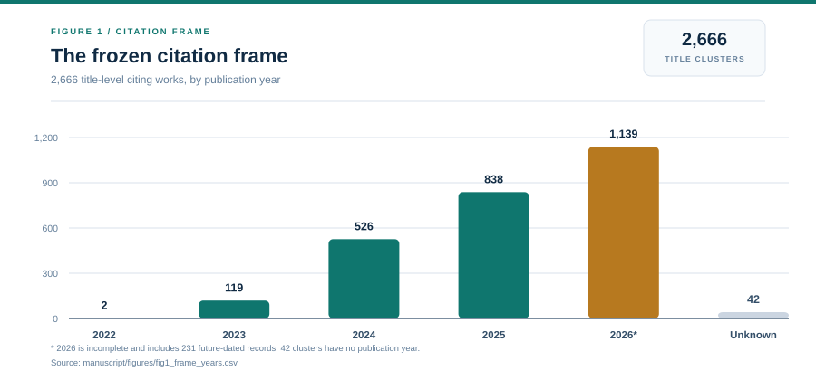
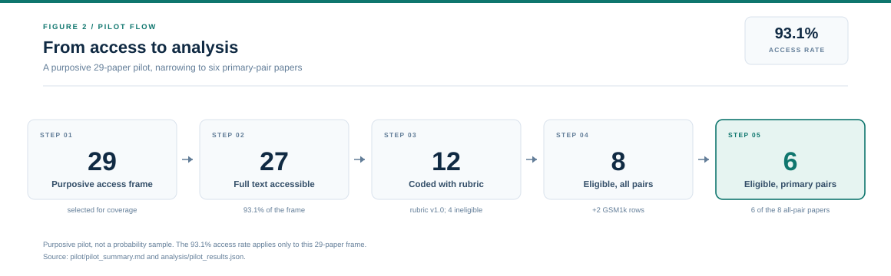
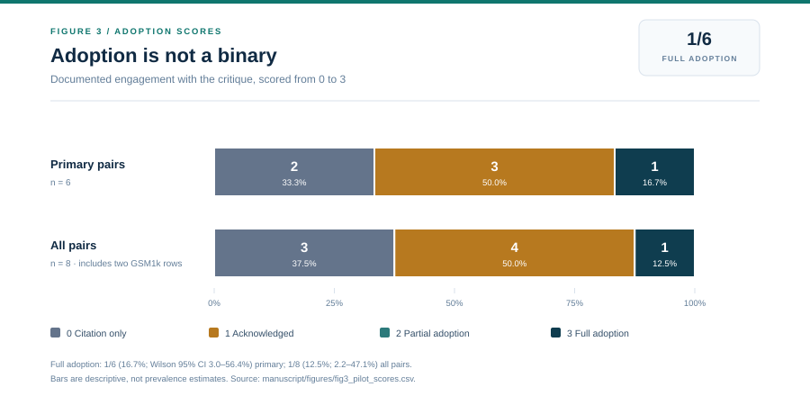

Does Benchmark CritiqueDiffuse into Evaluation Practice?
A pilot-based study of EvalPlus and SWE-bench+ adoption
Benchmark critiques release stronger tests and cleaner datasets. This project asks a narrower question than citation counts can answer: when a paper cites the critique, does its own evaluation actually change?
Benchmark critiques identify concrete defects in widely used evaluations and release remediations, but citation counts do not show whether citing papers change their evaluation practice. This pilot-based study asks what proportion of papers citing a benchmark critique document adopting its recommended benchmark artifact or protocol in their own primary evaluation.
The primary pairs are EvalPlus → HumanEval/MBPP and SWE-bench+ → SWE-bench. We combine a frozen citation frame of 2,666 title clusters with a purposive 29-paper pilot: 27 full texts were accessible, 12 papers were coded, 8 were eligible for the all-pair set, and 6 for the two primary pairs. Rubric v1.1 separates citation only (0), acknowledgment (1), partial adoption (2), and full adoption (3).
One of six primary-pair papers (1/6) fully adopted the remediation (16.7%; Wilson 95% CI 3.0–56.4); the all-pair estimate was 1/8 (12.5%; 2.2–47.1). Three of six primary-pair papers independently remediated the benchmark without adopting the critique's artifact. None of the three SWE-bench+ cases adopted the 548-instance dataset. Agreement statistics are LLM–LLM only (ordinal κ = 0.78 unweighted, 0.86 linear weighted) and are not human reliability.
Because the pilot is purposive and tiny, we do not estimate population prevalence or causal diffusion. The contribution is a transparent measurement instrument, boundary rules, and a pilot-based demonstration that citation, acknowledgment, and adoption are empirically distinct.
1/6primary-pair papers fully adopted the remediation16.7%; Wilson 95% CI 3.0–56.4%
3/6primary-pair papers independently remediated the benchmarkWithout adopting the critique's artifact
0/3SWE-bench+ papers adopted the 548-instance datasetAll three did some form of independent remediation
These are counts from a purposive pilot. They demonstrate that the categories can be distinguished; they do not estimate a rate.
02Questions
Motivation
A citation can signal awareness without saying anything about practice.
Code-generation benchmarks are routinely used to support claims about model progress. They are also routinely criticized. HumanEval and MBPP use small sets of hand-written tests; stronger tests expose programs that the original tests pass. SWE-bench and its variants can reward patches that exploit solution leakage or pass weak tests, and filtering the instance set changes measured resolution rates.
Those critiques are not only complaints. They release concrete remediations: augmented test suites, filtered datasets, and strengthened protocols. The open question is what happens next. A paper can cite a critique in related work, acknowledge that a benchmark has known problems, and then report its main result on the original benchmark unchanged. Citation counts cannot separate that paper from one that rebuilt its evaluation around the remediation.
A citation can mean the authors know the tests are imperfect. It does not tell us whether they changed anything.
Primary research question
Among research papers that cite a benchmark-remediation critique, what proportion document adopting the critique's recommended benchmark or protocol in their own evaluation of the criticized benchmark?
Five secondary questions organize the descriptive work. They are deliberately modest: the pilot can test whether the categories are usable, not whether adoption varies by venue, time, or critique type.
SQ1What is the distribution of engagement with the critique: citation only, acknowledged, partial adoption, or full adoption?
SQ2Does documented adoption differ between EvalPlus and SWE-bench+? The SWE-bench+ stratum is too small for a confirmatory test.
SQ3Is adoption more common in later papers, peer-reviewed venues, or papers with author overlap? This is exploratory and is not analyzed in the pilot.
SQ4How often do citing papers perform independent remediation without adopting the critique's artifact?
SQ5How sensitive would an estimate be to access failure, self-citation, benchmark version, and the treatment of partial adoption?
Two hypotheses were pre-specified for the full study: full adoption below 25%, and most eligible papers scoring 0 or 1. Neither is declared supported or rejected here. The exact-binomial diagnostics at n = 6 are reported only to show why the pilot cannot settle them. The contrast between EvalPlus and SWE-bench+ is exploratory, and the time and venue hypotheses are not analyzed.
03Background
Benchmarks and remediations
Two critiques, two very different adoption costs.
EvalPlus targets HumanEval and MBPP. It releases HumanEval+ and MBPP+ with augmented tests and a public harness. For a lab already running HumanEval, adoption is close to a drop-in substitution: install the harness, run the augmented tests, report the pass rate. SWE-bench+ targets SWE-bench, SWE-bench Lite, and SWE-bench Verified. Its remediation is a 548-instance curated dataset and a strengthened-test protocol. Adopting it means changing the instance set, reconciling a harness, and re-running agents. The comparison is useful because both artifacts are public and licensed, but their integration costs are not alike.
GSM1k → GSM8K is retained as a secondary task-fit contrast only. It is a parallel arithmetic benchmark, not a drop-in replacement, and its dataset card leaves the license field blank. It is excluded from the primary denominator.
Table 1 Benchmark pairs and remediation characteristics.Scroll sideways for all columns.
Pair
Critique
Criticized benchmark
Recommended practice
Artifact and license
Adoption cost
Role
P1
EvalPlus (Liu et al., 2023)
HumanEval; MBPP
HumanEval+ / MBPP+ augmented tests as the primary evaluation
GSM1k or a fully equivalent contamination-controlled replication
Public Hugging Face dataset; 1,205 rows; license field blank
Medium: parallel benchmark, not a drop-in replacement
Secondary only; excluded from the primary denominator
Artifact facts are verified in the repository's source verification log. Cost is an analytic characterization, not a measured implementation time.
The study sits between two literatures. Work on citation as a concept symbol shows that a reference signals participation in a conversation, not implementation of a specific claim (Small, 1978). Diffusion research treats adoption as a process with awareness, decision, implementation, and confirmation, and notes that adopters may reinvent an innovation rather than implement it as specified (Rogers, 2003). Benchmark-quality work such as BetterBench asks how good a benchmark is (Reuel et al., 2024); this project asks whether a critique of that benchmark changes later evaluation practice. The closest prior materials study non-English NLP benchmarks and their accessibility (Merzah, 2026, unpublished replication materials). The domain, outcome, and contrast here are different.
The new element is not the observation that some papers cite without using. It is the combination of a citation frame built from all citing works, an ordinal rubric with verbatim evidence and boundary rules, a low-cost versus high-cost remediation contrast, and a frozen frame that can be audited. The pilot tests whether that combination is workable. It does not establish that the resulting estimate would be precise or generalizable.
04Method
Study design
A frozen frame, a small pilot, and a plan that has not been run.
The project has three components. Keeping them separate matters: the frame is a real, frozen dataset; the pilot is a real but purposive test of the coding instrument; the full study is a design document.
Frame construction
A Semantic Scholar citation snapshot retrieved on 13 November 2026: 2,572 EvalPlus citation rows and 136 SWE-bench+ citation rows, reduced to 2,666 title clusters.
Pilot
A purposive 29-paper access frame, 27 accessible full texts, 12 coded papers, 8 eligible for all pairs, and 6 eligible for the two primary pairs. The pilot tests access, coding, and the rubric.
Full-study plan
A stratified design of 900 invited papers with a stop rule, a pre-specified analysis plan, and 20% human double-coding. It has not been executed.
The frame is a snapshot, not a census
The raw retrieval sums to 2,708 rows. An identifier union-find merged records sharing a DOI, arXiv ID, DBLP key, CorpusId, or Semantic Scholar paperId, producing 2,684 records. That is an intermediate count. Normalized-title clustering then produced 2,666 clusters, with 14 multi-variant clusters accounting for 18 extra rows.
The final frame has 135 clusters in the SWE-bench+ census stratum (112 SWE-only plus 23 citing both critiques) and 2,531 in the EvalPlus-only stratum. The 23 both-critique clusters are assigned to the small stratum so that it is a complete census. The 2026 portion is incomplete and includes 231 records with future-dated publication metadata. The frame misses non-indexed work, and title clustering can merge distinct papers with identical titles.

Figure 1. The frozen citation frame by publication year. The 2026 bar is incomplete and includes future-dated records.Source data: fig1_frame_years.csv
Table 2 Frozen citation-frame profile.
Quantity
Count
Note
Raw EvalPlus citation rows
2,572
Semantic Scholar reports 2,573; one row was not returned.
Raw SWE-bench+ citation rows
136
Semantic Scholar reports 136.
Identifier-deduplicated union
2,684
Intermediate count; not the analysis frame.
Title-deduplicated clusters
2,666
Frozen analysis frame.
SWE-bench+ census stratum
135
Includes 23 clusters citing both critiques.
EvalPlus-only sample stratum
2,531
Sampled in the planned main design.
Clusters citing both critiques
23
Assigned to the SWE-bench+ census.
The pilot was selected for coverage, not representation
The pilot used a purposive 29-paper access frame assembled to cover different benchmarks and likely adoption levels. Twenty-seven full texts were accessible (93.1%), and 12 papers were coded. Four of the 12 were ineligible because they did not evaluate the criticized benchmark. Fifteen of the 27 accessible papers were not coded after category saturation. The two inaccessible papers were not coded and are not counted as non-adopters.
Eligibility was decided before scoring. A paper had to report empirical results on HumanEval, MBPP, SWE-bench, SWE-bench Lite, or SWE-bench Verified; contain a bibliographic citation to the critique or its official artifact; and be available as an English full text with enough methods and results detail to code. Derivative-only papers, such as those evaluating SWE-bench Pro, were ineligible rather than scored as non-adopters.

Figure 2. Pilot flow from the 29-paper purposive frame to the 6 primary-pair eligible papers. The 93.1% access rate applies only to this selected frame.Source data: fig2_pilot_flow.csv
Table 3 Pilot flow and eligibility.
Stage
n
Note
Purposive access frame
29
Selected for construct coverage, not randomly.
Full text accessible
27
93.1% of the purposive frame; not generalizable.
Coded with rubric
12
Evidence quotes recorded.
Eligible, all pairs
8
Includes two GSM1k secondary rows.
Eligible, primary pairs
6
EvalPlus and SWE-bench+ only.
Ineligible
4
Mostly no evaluation of the criticized benchmark.
Documented adoption is an ordinal construct
The outcome is what a paper's text, tables, or captions state about its own evaluation. It is not citation frequency, agreement with the critique, general evaluation quality, independent remediation, or verified execution of the artifact. Rubric v1.1 assigns one score per citing paper and critique:
Rubric The four-level adoption ladder.Scroll sideways for all columns.
Score
Label
What is present
What is absent
0
Citation only
A bibliographic citation; the criticized benchmark is used unchanged.
Any specific discussion of the critique's finding or recommendation.
1
Acknowledged
A specific statement of the critique's finding.
Any use of the recommended artifact or protocol.
2
Partial adoption
At least one recommended practice, but not for the main evaluation.
The core artifact or protocol supporting a main claim.
3
Full adoption
The core artifact or protocol supports at least one main table, figure, or claim.
Nothing further is required under the rubric.
The binary primary outcome is full adoption (score 3). Scores 0–2 are non-adoption for the primary estimate; partial adoption is reported separately.
Five boundary rules do most of the work. A reference-list entry alone is 0. Generic contamination or leakage talk is 0 unless the critique's specific finding is stated. Acknowledgment requires that specific statement while leaving the evaluation unchanged. Independent remediation is not adoption; it is coded separately and cannot raise a score. Full adoption requires the remediated artifact or protocol to support a main claim, not an appendix or robustness check. Derivative-only papers are ineligible.
Each score of 1 or higher required a verbatim evidence quote of at most 60 words and a section or table locator. Scores could not be assigned from an abstract alone. The pilot table records short quotes for most cases but does not record page numbers for every quote, which is a limitation to fix in the full study.
The full study is a plan
The designed study would invite 900 papers: a census of the 135-cluster SWE-bench+ stratum and a random sample of 765 from the 2,531 EvalPlus-only clusters. Under planning assumptions of 80% access, 18% eligibility, and p = 0.125, that would yield about 130 eligible papers and a Wilson interval of roughly 7.7–19.1%. If fewer than 120 eligible papers were found, blocks of 100 would be added up to a hard cap of 1,200 invited.
None of this was executed. A 335-record feasibility cohort was drawn, but retrieval was halted before completion and no records were coded. The 900-paper numbers are planning values, not observations.
05Results
Pilot results
Six papers. Three kinds of engagement. One full adoption.
Among the six primary-pair papers, two cite the critique only, three state its specific finding and keep the original evaluation, none use the remediation partially, and one uses it for a main result. The full adopter is whatswrong, which uses HumanEval+ and MBPP+ as main benchmarks and reports pass rates on 164 HumanEval+ samples and 399 MBPP+ samples. Under the rubric that is score 3: the augmented tests support the paper's primary claims and the critique is cited as their basis.

Figure 3. Adoption scores for the six primary-pair papers and the eight all-pair papers. The all-pair set adds two GSM1k secondary cases.Source data: fig3_pilot_scores.csv
Table 4 Primary-pair adoption-score distribution.
Score
Label
n
Share
0
Citation only
2
33.3%
1
Acknowledged
3
50.0%
2
Partial adoption
0
0.0%
3
Full adoption
1
16.7%
All eight eligible papers, including the two GSM1k secondary cases, split 3 citation-only, 4 acknowledged, 0 partial, and 1 full.
The all-pair set adds two GSM1k cases: one acknowledged and one citation-only. Full adoption remains 1/8, or 12.5%. Independent remediation is more common than adoption: 3 of 6 primary-pair papers and 4 of 8 all-pair papers did something about the benchmark's defect without using the critique's artifact.
Table 5 Pair-specific pilot results.Scroll sideways for all columns.
Critique
Eligible n
Full (3)
Full %
Wilson 95% CI
Acknowledged or better
Independent remediation
EvalPlus
3
1
33.3%
6.1–79.2%
2
0
SWE-bench+
3
0
0.0%
0.0–56.1%
2
3
GSM1k (secondary)
2
0
0.0%
0.0–65.8%
1
1
The EvalPlus and SWE-bench+ rows each contain three papers. The observed risk difference is 33.3 percentage points, but the intervals overlap almost completely. The contrast is descriptive and not powered.
Estimates Pilot proportions with Wilson 95% intervals.Scroll sideways for all columns.
Quantity
k
n
Estimate
Wilson 95% CI
Full adoption, primary pairs
1
6
16.7%
3.0–56.4%
Full adoption, all pairs
1
8
12.5%
2.2–47.1%
Acknowledged or better, primary pairs
4
6
66.7%
30.0–90.3%
Citation only, primary pairs
2
6
33.3%
9.7–70.0%
Independent remediation, primary pairs
3
6
50.0%
18.8–81.2%
The interval is the result. The 1/6 estimate spans 3.0–56.4%: the pilot is compatible with a very low adoption rate and with a moderately high one. Reporting 16.7% without the interval would overstate what six papers can support. The pre-specified exact-binomial diagnostics give p = 0.534 for the hypothesis that full adoption is below 25% and p = 0.109 for the hypothesis that most papers score 0 or 1. Neither is confirmatory. A non-significant result at n = 6 is not evidence of no effect.
The cases behind the scores
The coded cases show why a binary "used / not used" measure would collapse distinct behaviour. Three SWE-bench+ papers recognized the critique without adopting its dataset, and each did something else instead. utboost proposes its own benchmark; schrodinger uses its own repository transformations on SWE-bench Verified; reagent runs an independent leakage analysis. None of them is indifferent to evaluation quality, and none of them diffuses the critique's specific artifact.
Table 6 Coded pilot cases and boundary decisions.Scroll sideways for all columns.
Paper key
Critique
Eligible
Score
Engagement
Independent remediation
Boundary note
whatswrong
EvalPlus
Yes
3
2
No
Uses HumanEval+ and MBPP+ as main benchmarks, including augmented tests; reports pass rates. Full adoption.
utboost
SWE-bench+
Yes
1
2
Yes
Discusses the critique's incorrect-patch finding but proposes its own UTBoost; no SWE-bench+ dataset or protocol adoption.
schrodinger
SWE-bench+
Yes
1
2
Yes
Cites SWE-bench+ as an enhancement but uses its own repository transformations on SWE-bench Verified; no SWE-bench+ adoption.
calibration
EvalPlus
Yes
1
1
No
States the critique's test-gap finding but evaluates original HumanEval; no augmented tests.
reagent
SWE-bench+
Yes
0
0
Yes
Critique appears only in the reference list; the paper's leakage analysis is independent and not presented as following SWE-bench+.
correctness_internal
EvalPlus
Yes
0
0
No
Critique appears only in the reference list; evaluates original HumanEval/MBPP without discussing test insufficiency.
promptcot
GSM1k (secondary)
Yes
0
0
No
Generic memorization cluster; evaluates GSM8K unchanged. Pilot disagreement: order 1 vs 0; adjudicated 0 under the generic-cluster rule.
understand_translate
GSM1k (secondary)
Yes
1
1
Yes
Generic contamination citation; runs its own KSM contamination check, not GSM1k; evaluates GSM8K and translated data unchanged.
hafix
SWE-bench+
No
—
0
No
Cites Aleithan in a generic bug-fixing list; does not evaluate SWE-bench, Lite, or Verified.
swebenchpro
SWE-bench+
No
—
0
No
Evaluates SWE-bench Pro, a derivative, not SWE-bench, Lite, or Verified.
cweval
EvalPlus
No
—
0
No
Evaluates its own CWEval benchmark; cites EvalPlus only as future work.
demystifying
GSM1k (secondary)
No
—
0
No
Cites Zhang et al. in a generic claim; does not evaluate GSM8K or GSM1k.
Ineligible papers receive no 0–3 score; the score field is blank in the source data and shown here as an em dash. Engagement is the rubric's secondary engagement level (0–2).
The pilot does not show that EvalPlus diffuses better than SWE-bench+. It shows that the EvalPlus side contains the one full adopter and the SWE-bench+ side contains three independent remediations. That is the pattern a cost contrast would predict, but it is also what a small selected sample can produce by chance. The full study is needed before the contrast can be described as a difference.
06Reliability
Agreement and limits
Two LLM passes agreed. That is not human reliability.
The pilot's first coding pass was LLM-assisted. The second pass was another LLM pass with fresh context. Fresh context is not statistical independence, and a shared model family can share its mistakes. These statistics are a rubric-debugging signal, not a measurement-error estimate.
Do not read these as inter-rater reliability
No human second coder participated. The exact model identifier, prompt, temperature, and date were not preserved. The full study must report them and must add human double-coding, calibration, adjudication, and a 10% audit. Without a human coder, a full-study prevalence estimate would carry an unknown measurement error.
Checks Pilot agreement between two LLM passes.
Check
Result
Eligibility agreement
12/12 (100%)
Eligibility κ
1.00 by convention (no variance)
Ordinal agreement
7/8 (87.5%)
Ordinal unweighted κ
0.78
Ordinal linear-weighted κ
0.86
Observed disagreement
promptcot: first pass 0; second pass proposed 1; adjudicated 0
The primary-pair subset had no ordinal disagreements (6/6). With n = 6, that is not a reliability result and is not reported as one.
Rubric v1.1 made four substantive changes before the results were interpreted: GSM1k became secondary only; generic contamination or leakage mentions became score 0; derivative-only papers became ineligible rather than score 0; and full adoption was restricted to use that supports a main claim. The changes are documented in the repository. They are part of the instrument's development, not a response to the observed distribution.
What this pilot cannot support
01A prevalence estimate. The pilot is purposive and small: 29 selected, 12 coded, 6 primary-pair and 8 all-pair eligible. It cannot estimate how often citing papers adopt a remediation.
02Human reliability. No human second coder participated. The κ values are LLM–LLM agreement and do not measure human coding error.
03Full-scale results. The 900-paper study was designed but not executed. The 335-record feasibility cohort was drawn but not coded, and retrieval was halted.
04A representative access rate. The 93.1% pilot access rate was obtained on a selected frame and should not be generalized to the 2,666-paper frame.
05Verified execution. The study measures documented adoption, not whether the artifact ran correctly. A paper can claim HumanEval+ and run HumanEval, or use HumanEval+ silently.
06The EvalPlus / SWE-bench+ contrast, or time and venue gradients. Each primary side has three papers; the coded set is 2025-heavy and venue fields are incomplete.
07A complete citation census. The frame is a Semantic Scholar snapshot. It misses non-indexed work, the 2026 portion is incomplete, and 231 records have future-dated metadata.
08Perfect deduplication. Title clustering can merge distinct works with identical titles. Fourteen multi-variant clusters need manual review before the full study.
09Registration. The protocol was not registered and no OSF registration exists. The Zenodo DOI identifies the deposited preprint; it is not a preregistration.
07Reproduce
Code and data
What can be checked, and what cannot.
The repository separates reproducible artifacts from unavailable ones. The frozen frame counts and hashes, pilot flow, score distributions, Wilson intervals, figures, tables, and the sampling script's behaviour on the frozen frame can all be checked without paywalled full texts. The coded papers' full texts, the original LLM prompts and outputs, human reliability, and the full-scale estimates cannot.
Artifacts Primary files in the research repository.Scroll sideways for all columns.
ReproducibleFrame counts and hashes; pilot flow; score distributions; intervals; figures and tables.
TestedIntegrity, arithmetic, table and figure consistency, manuscript claims, and the site's internal links.
Not availableFull texts; original LLM outputs; human reliability; full-scale estimates; registration.
The repository's checksums are recorded over LF-normalized bytes, so verification is stable across Windows, macOS, and Linux. The figures and tables are generated by script; the SVGs are copied into this site without hand-editing. Full texts are not redistributed, and no PDFs, raw LLM outputs, or credentials are committed.
08References
Works cited
References
The reference list follows the manuscript. Links go to the publisher, arXiv, DOI, or dataset record where one exists. Merzah (2026) is unpublished replication material and is labeled as such.
Aleithan, R., Xue, H., Mohajer, M. M., Nnorom, E., Uddin, G., & Wang, S. (2024). SWE-Bench+: Enhanced Coding Benchmark for LLMs. arXiv:2410.06992. https://arxiv.org/abs/2410.06992
Austin, J., Odena, A., Nye, M., Bosma, M., Michalewski, H., Dohan, D., Jiang, E., Cai, C., Terry, M., Le, Q., & Sutton, C. (2021). Program Synthesis with Large Language Models. arXiv:2108.07732. https://arxiv.org/abs/2108.07732
Chen, M., Tworek, J., Jun, H., Yuan, Q., Pinto, H. P. de O., Kaplan, J., Edwards, H., Burda, Y., Joseph, N., Brockman, G., et al. (2021). Evaluating Large Language Models Trained on Code. arXiv:2107.03374. https://arxiv.org/abs/2107.03374
Jimenez, C. E., Yang, J., Wettig, A., Yao, S., Pei, K., Press, O., & Narasimhan, K. (2023). SWE-bench: Can Language Models Resolve Real-World GitHub Issues? arXiv:2310.06770; ICLR 2024. https://arxiv.org/abs/2310.06770
Kapoor, S., & Narayanan, A. (2023). Leakage and the reproducibility crisis in machine-learning-based science. Patterns, 4(9), 100804. https://doi.org/10.1016/j.patter.2023.100804
Liu, J., Xia, C. S., Wang, Y., & Zhang, L. (2023). Is Your Code Generated by ChatGPT Really Correct? Rigorous Evaluation of Large Language Models for Code Generation. In Advances in Neural Information Processing Systems 36 (pp. 21558–21572). https://doi.org/10.52202/075280-0943
Merzah, B. M. (2026). Replication materials for “Cited but Not Used: Documented Adoption and Data Accessibility in 40 Non-English NLP Benchmarks.” Zenodo. https://doi.org/10.5281/zenodo.23634794Unpublished replication materials; not peer reviewed.
Page, M. J., McKenzie, J. E., Bossuyt, P. M., Boutron, I., Hoffmann, T. C., Mulrow, C. D., et al. (2021). The PRISMA 2020 statement: an updated guideline for reporting systematic reviews. BMJ, 372, n71. https://doi.org/10.1136/bmj.n71
Reuel, A., Hardy, A., Smith, C., Lamparth, M., Hardy, M., & Kochenderfer, M. J. (2024). BetterBench: Assessing AI Benchmarks, Uncovering Issues, and Establishing Best Practices. NeurIPS 2024 Datasets and Benchmarks Track. https://arxiv.org/abs/2411.12990
Rogers, E. M. (2003). Diffusion of Innovations (5th ed.). Free Press.
Wilson, E. B. (1927). Probable inference, the law of succession, and statistical inference. Journal of the American Statistical Association, 22(158), 209–212. https://doi.org/10.1080/01621459.1927.10502953
Zhang, H., Da, J., Lee, D., Robinson, V., Wu, C., Song, W., Zhao, T., Raja, P., Zhuang, C., Slack, D., Lyu, Q., Hendryx, S., Kaplan, R., Lunati, M., & Yue, S. (2024). A Careful Examination of Large Language Model Performance on Grade School Arithmetic. arXiv:2405.00332. https://arxiv.org/abs/2405.00332
09Cite
Citation
Cite the preprint, not a finding.
This is a pilot-study preprint. If you cite it, describe it as a pilot and do not attribute a prevalence estimate to it. The BibTeX entry below matches the repository's citation metadata and the downloadable file.
Aman, S. A. (2026). Does benchmark critique diffuse into evaluation practice? A pilot-based study of EvalPlus and SWE-bench+ adoption [Pilot-study preprint]. Zenodo. https://doi.org/10.5281/zenodo.24245000
@misc{aman2026benchmarkcritique,
author = {Aman, Syed Abdul},
title = {Does Benchmark Critique Diffuse into Evaluation Practice?
A Pilot-Based Study of EvalPlus and SWE-bench+ Adoption},
year = {2026},
month = nov,
publisher = {Zenodo},
version = {1.0},
doi = {10.5281/zenodo.24245000},
howpublished = {\url{https://p-r-e-m-i-u-m.github.io/benchmark-critique-diffusion-protocol/}},
url = {https://github.com/P-r-e-m-i-u-m/benchmark-critique-diffusion-protocol},
note = {Pilot-study preprint; not peer reviewed}
}
The preprint is archived on Zenodo under DOI 10.5281/zenodo.24245000. No OSF registration exists; the DOI identifies the deposit, not a preregistration. The paper is a typeset pilot-study preprint and has not been peer reviewed. Please open an issue for factual corrections or broken links.